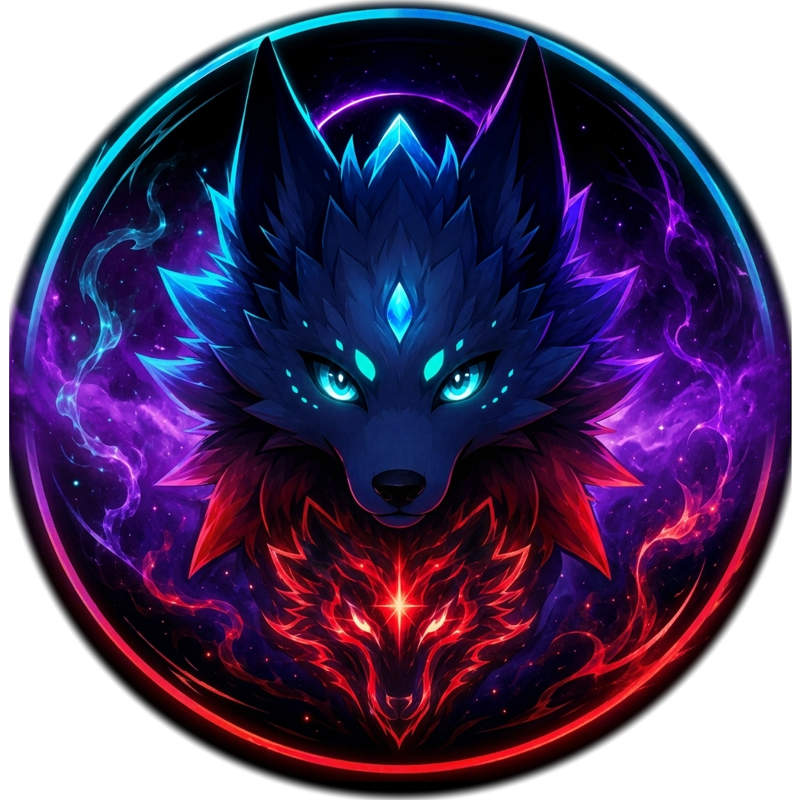

Schnell
Optimierte Performance für flüssiges Surfen ohne Kompromisse.

NyxNova DownloadEin moderner, schneller und sicherer Browser mit atemberaubendem Nova-Design.
Optimierte Performance für flüssiges Surfen ohne Kompromisse.
Integrierter Schutz und smarte Einstellungen für deine Privatsphäre.
Themes, Farben und Layouts machen NyxNova zu deinem Browser.
Erweiterungen, Plugins und Power-Features für mehr Freiheit im Web.
NyxNova befindet sich aktuell in der aktiven Beta-Phase. Teste neue Funktionen, gib Feedback und hilf mit, den besten Nova-Browser zu bauen.
NyxNova kümmert sich um alles Wichtige im Hintergrund.
Werde Teil der NyxNova-Community und gestalte die Zukunft des Surfens mit.